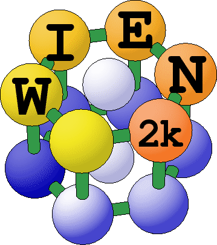
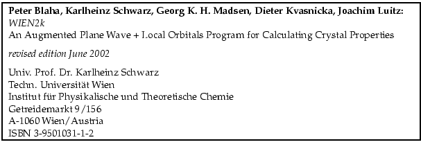

Next: Contents
Contents

An Augmented Plane Wave Plus Local Orbitals Program
for Calculating Crystal Properties
User's Guide, November 2001
Peter Blaha
Karlheinz Schwarz
Georg Madsen
Dieter Kvasnicka
Joachim Luitz
Vienna University of Technology
Inst. of Physical and Theoretical Chemistry
Getreidemarkt 9/156, A-1060 Vienna/Austria

ISBN 3-9501031-1-2
pblaha
2007-01-25